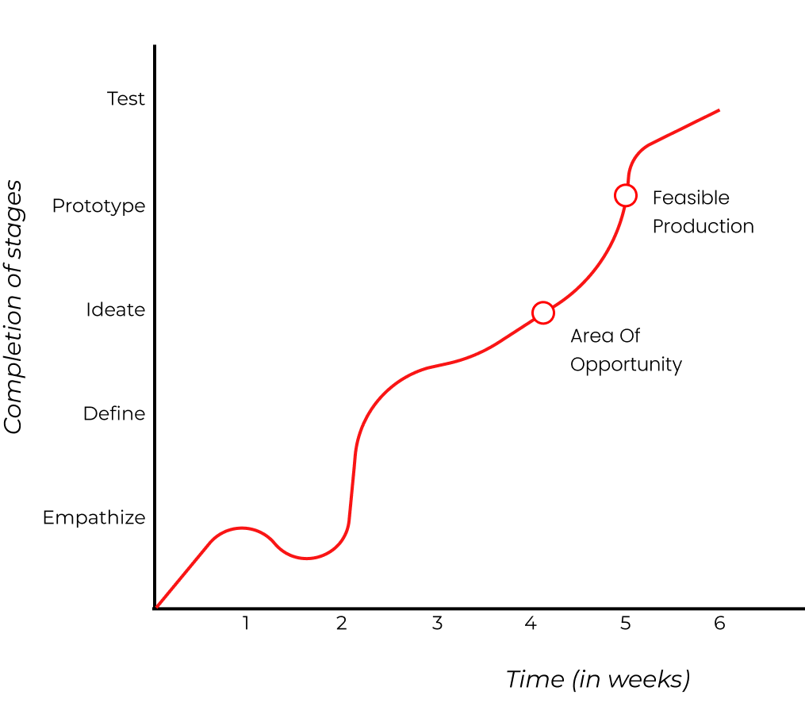
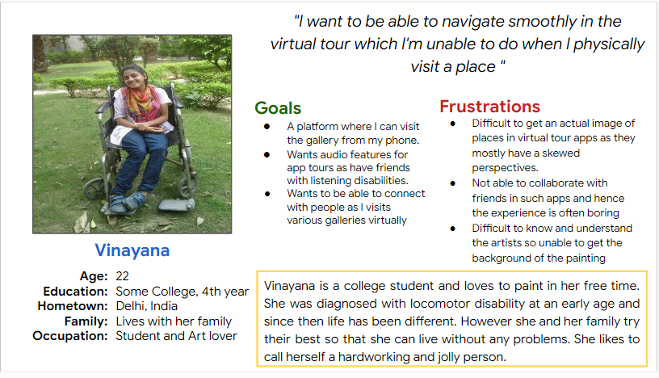
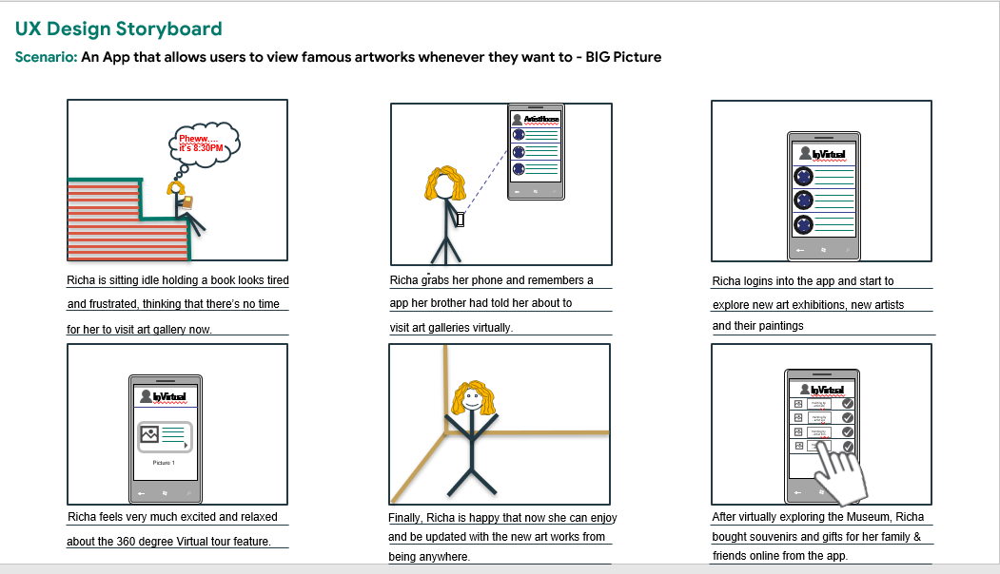
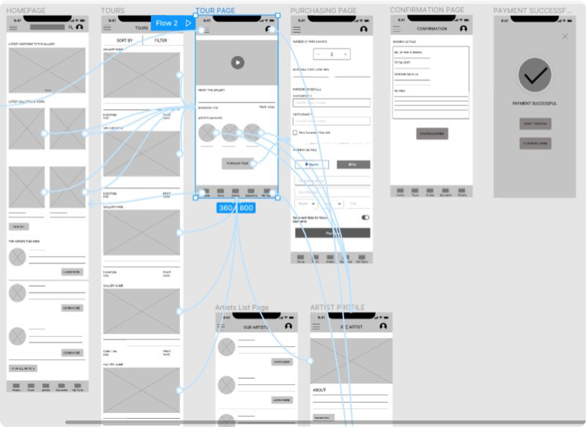
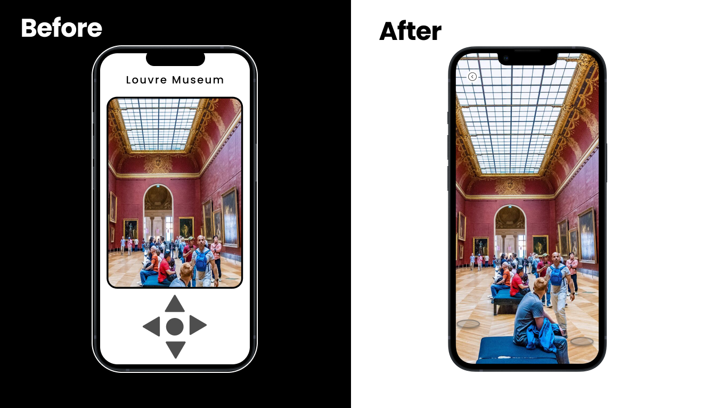
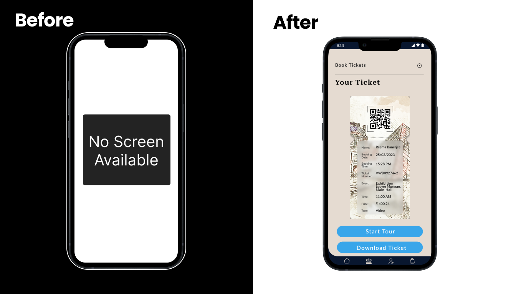
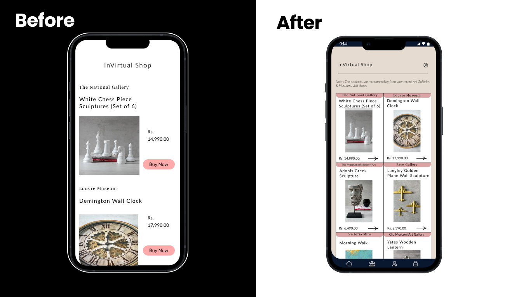
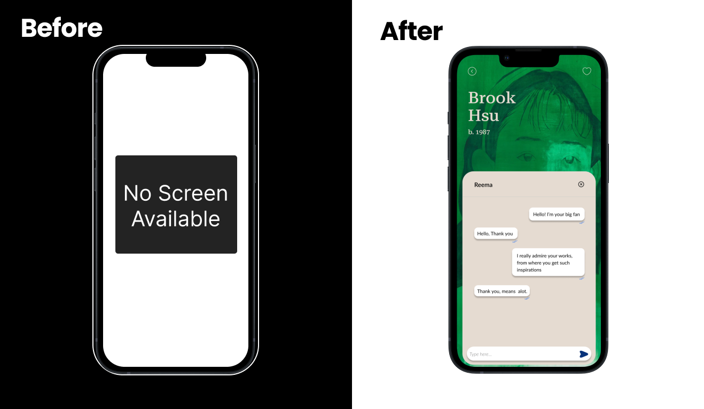

InVirtual App Design
- History,
- Education,
- Travel
08 Weeks
UX/UI Designer
25+
Overview 👀
InVirtual allows visitors to get experience and knowledge about the most popular
artworks around the
world. This app provides a whole matrix of information about the art, support and location, and
orientation in the virtual space.
Enjoy the pleasure of Virtual Art gallery tours anywhere and anytime from your phone!
Why InVirtual?
Art enthusiasts, students and many other people who love to know more about art but couldn’t physically visit Art galleries all the time. In situations like pandemic, people can't visit museums and galleries to experience different art forms around the world.
Solution
Considering the challenges faced by users, this app will tend to provide them with the best solutions such as Modern user-friendly experience, Visually appealing UI, Improvised navigation, free virtual passes, multiple languages, detailed information about Art, accessibility standards according to WCAG and VIP virtual Tours
Goal
To encourage users to use virtual museum app more often and enhance their experience of visiting art museum / galleries.
Roadmap
When the project began, the main motive was to enhance the user experience of targeted visitors who encounters multiple problems while visiting Art museum/ gallery. Now, my role as a designer was to work backgrounds to find the right solution for their problem so the user can access app from their comfort zones. The app requires careful planning and execution.
Understanding the User:
User Research
A user research was conducted to understand the journey of user needs, behaviors and motivations which are very helpful to gain more user insights. This research used two methodologies which are Secondary Research and User Interviews.
Secondary Research
The main goal of using this method is to help users to discover and evaluate their
experience and learn more about surrealist art by the famous and budding artists of the museum and
elsewhere.
Some insights concluded after the research are:
- Most of the virtual art tours do not offer enough information for users.
- Many users are not familiar with exploring virtual tours.
- Most of the apps and website are still exclusive.
User Interviews
After doing secondary research method, I conducted user interviews for better
understanding and to gain more insights from the target users. 5 people with the age between 18-50
years old were interviewed to get in-depth information about the users.
Some insights are:
- Users are busy in their own schedule and are not able to visit Art galleries.
- Some Art galleries are too far too go.
- Many people want a place to share their thoughts with other visitors.
- Users think that visiting an art gallery is a waste of time and money.
- The purchasing of souvenirs online is not always a easy task.
Problem Statement
Vinayana is a college student who needs to view art works from anywhere she wants to because she diagnosed with locomotor disability and she loves art culture and wants to learn more about it but she cannot visit art museums by herself.
User Persona
IDEATION
- Easy Navigational Flow
- User Interactions
- High Quality Artworks
- VIP Memberships
- Audio Tours
- Interactive Maps
- Offline Downloaded Tours
- Accessible Virtual Tours
- Artist Interaction
- Artists Work Details
- Live Tours and Events
- Multiple Language Support
- Online souvenirs Shopping
Crazy Eights and How Might We
Used Crazy Eights method to find out the solution for user problems. In crazy eight method I sketched eights different screens in eight minutes.

In ‘How Might We’ method, I tried to find out the possible solutions based on the
personas to make user enjoys the product.
- How Might We help users to experience great virtual tours.
- How Might We provide best user experience of shopping from the app.
- How Might We help users to make it easy to use Virtual tour app.
- How Might We provide great accessibility features for users.
- How Might We help users to get knowledge about artists and artworks.
- How Might We makes the user come back and enjoy the app again.
Big Picture Storyboard
The storyboards tells the story of a user, the experience which the user have to go through to complete a task. A storyboard helps user place their focus on the actual user needs and describe why the product will be relevant to the user.
Beginning with LO-FI Prototype
Before rolling out the final design we created prototype with interactions. The prototype summary outlines the key features and functionality of the app, showcasing it’s potential to revolutionize the way people engage with art and culture. By offering immersive virtual tours, in-depth educational content, and interactive experiences, this app aims to make art museums more accessible and engaging than ever before.
Usability
Round 1:
- Users wants to have real life tour experiences.
- Users wants to see confirmation page with details.
- Users wants to buy Souvenirs from the app.
Round 2:
- Users want to schedule tours from the app.
- Users want to chat with the artists.
- Users want to know more about the artist’s work.
MAJOR DESIGN ITERATIONS
I made some major modifications based on the feedback that I received from the user researches sessions. My goal was to create a product that was easy to understand, efficient to use, and enjoyable to interact with. To achieve this, I paid close attention to the user feedback and made changes accordingly.
⭐ Iteration 1. Smooth museum tour with good navigation.
Users wanted to have clear and impressive guided museum tour with great navigational flow for more engagement with the app, so they can feel that they're present there in the museum only.
⭐ Iteration 2. Clear details of tour tickets.
The clear and concise description of museum tour ticket is an important requirement by the users so that they can easily find the venue and time and be there in the museum before an hour ago.
⭐ Iteration 3. Souvenirs shopping online from the app
Users wanted to shop same museum articles online from the app and can gift to their family and dear ones
⭐ Iteration 4. Online chat with the Artists
The chat with the artist feature is a must recommendation by the users, as they wants to talk to the artist one-on-one and can learn form them.
TAKEAWAYS
✔️ The project helped me to learn more about the process of a design thinking framework. Learned to do better visuals with the material design guidelines, by creating a small component library. Also learned how to empathize with the users in a better way.
✔️ This app will help the users to fulfill their needs of visiting an Art gallery at anytime and anywhere. All at one place.
✔️ The user needs and the user feedback is very important in the making of an successful app.